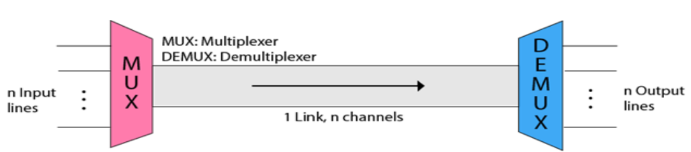
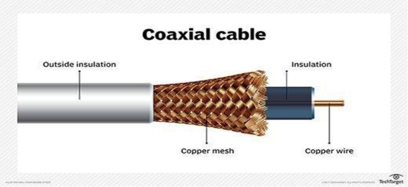
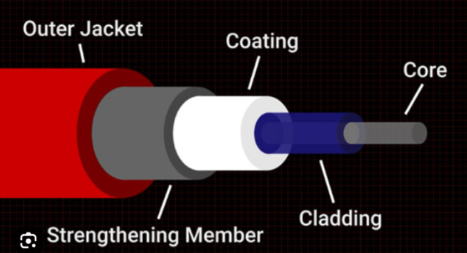
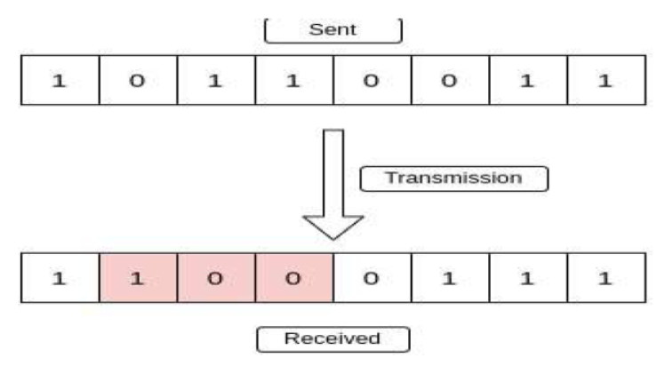

Computer Network
@Debuggers
Network
Network is a group of computers connected with each other through wires,optical fibres or optical links
so that various devices can intract with each other through a network.
Networking
Computer networking refer to interconnected computing devices
that can exchange data and share resources with each other.
Overview of Data Communication Networks
Communication is defined as a process in which more than computers
transfers information, instructions to each other and for sharing resources.
The effectiveness of any data communications system depends upon
four fundamental characteristics.
- Message- message is a piece of information that is to be transmitted from one person to another.It
would
be transmitted from one person to another.It could be a text file, an audio file
,video file etc.
- Sender- is simply a device that sends data message.It can be
a computer,mobile,telephone,laptop,video camera or workstation etc.
Receiver- is a device that receives messages.It can be a computer,
telephone,mobile,workstation etc.
- Transmission Medium/Communication channels- channels are the medium that
connect two or more workstations. workstations can be connected by either wired media or
wireless media.
- Set of Rules(Protocol)- someone sends the data(The sender),it
should be understandable to the receiver also otherwise it is meaningless.
For example,sonali sends a message to chetan.If sonali writes in hindi
and chetan cannot understand hindi,it is meaningless conversation.

Types of data communication
The data communicationis divided into three types:-
- Simplex Communication- is a one way Communication or we can say
that unidirectional communication in which one device only
receives and another device only send data and devices uses their
entire capacity in transmission.For example,Iot,Entering data using a
keyboard, listening music using a speaker etc.
- Half Duplex Communication-It is a two way communication,or we
can say that is a bidirectional communication in which both the devices can send and
receive data but not at the same time.For example walkie-Talkie,Intrent browsing.
- Full Duplex Communication-It is a two way Communication or we can
say that it is bidirectional communication in which both the devices can send
and receive data at same time.For example, mobile phone,
landlines etc.
Protocol and standard in computer networks
Protocols and Standards are important in Computer networks.They are like the rule and guidelines
that allow different devices and system to communicate and works together
smoothly.Protocols define how data is sent,received,and processed,while standards ensure that
various technologies are compatible with each other.
What is Protocol?
A protocol is a set of rules that determines how data is sent and received
over s network.The protocol is just like a language that computers use to talk to each other, ensuring
they understand that can respond to each other's message correctly.Protocol help to make sure that
data moves smootly and securely between devices on a network.
In a above diagram, Protocols are shown as a set of rules.Communication between
the sender and
Receiver is not possible without protocol.
Key Elements of Protocol
- Timing: Timing refers to the synchronization and coordination
between devices while transferring the data. Timing ensures at what
time data should be sent and how fast data can be sent. For example,
If a sender sends 100 Mbps but the receiver can only handle 1 Mbps,
the receiver will overflow and lose data. Timing ensures preventing
of data loss, collisions, and other timing-related issues.
- Sequence Control:Sequence control ensures the proper ordering of
data packets. The main responsibility of sequence control is to
acknowledge the data while it get received, and the retransmission of
lost data. Through this mechanism, the data is delivered in correct order.
- Flow Control:Flow Control regulates device data delivery. It limits
the sender's data or asks the receiver if it's ready for more. Flow
control prevents data congestion and loss.
- Error Control:Error Control mechanisms detect and fix data
transmission faults. They include error detection codes, data resend,
and error recovery. Error control detects and corrects noise,
interference, and other problems to maintain data integrity.
- Security:Network security protects data confidentiality, integrity,
and authenticity. which includes encryption, authentication, access
control, and other security procedures. Network communication's
privacy and trustworthiness are protected by security standards.
Types of Protocol
Network Layer Protocols
Transport Layer Protocols
Application Protocols
Wireless Protocols
Routing Protocols
Security Protocols
Internet Protocols
Important Protocols Used in Computer Network
TCP (Transmission Control Protocol): Ensures data is sent and received accurately by
breaking it into packets, sending them, and reassembling them at the destination.
IP (Internet Protocol): Addresses and routes the packets to make sure they reach the right
destination.
HTTP/HTTPS (Hypertext Transfer Protocol/Secure): HTTP used for transferring
web pages on the internet.
FTP (File Transfer Protocol): Used for transferring files between computers on a network.
It allows users to upload and download files.
DNS (Domain Name System): DNS: DNS stands for Domain Name System. An IP address
is used to identify the connection of a host to the internet uniquely. But, people prefer to use the
names instead of addresses. Therefore, the system that maps the name to the address is known as
Domain Name System.
DHCP (Dynamic Host Configuration Protocol): Automatically assigns IP addresses
to devices on a network, ensuring each device has a unique address.
SMTP (Simple Mail Transfer Protocol): Used for sending emails. It transfers emails
from a client to a server or between servers.
SSH (Secure Shell): Provides a secure way to access and manage devices over a network. It
encrypts the data, making it safe from eavesdropping.c
SNMP (Simple Network Management Protocol): Used for managing and monitoring network devices like
routers, switches, and servers. It collects and organizes
information about these devices.
TYPES OF NETWORK
- Local Area Network(LAN)
- Wide Area Network(WAN)
- Metropolitan Area Network(MAN)
- Personal Area Network(PAN)

LAN(Local Area Network)
- Local Area Network is a group of Computers connected to each other
in a small area such as building,office.
- LAN is used for connecting two or more personal computers through communication
medium such as twisted pair cable,coaxial cable etc
- The data is transferred at an extremely faster rate in Local Area Network

Metropolitan Area Network(MAN)
MAN or Metropolitan area Network covers a larger area than that
of a LAN and smaller area as compared to WAN. It connects two or more
computers that are apart but resides in the same or different cities. It covers
a large geographical area and may serve as an ISP (Internet Service Provider).
WAN(Wide Area Network)
- A Wide Area Network is a network that extends over a large geographical
area such as states or countries.
- A Wide Area Network is quite bigger network than the LAN & MAN.
- A Wide Area Network is not limited to a single location, but it spans over a
large geographical area through a telephone line, fibre optic cable or satellite
links.

Examples of Wide Area network
- Mobile Broadband.
- Last mile.
- Private network.
PAN(Personal Area Network)
- Personal Area Network is used for connecting the computer devices of
personal use is known as Personal Area Network.
- Thomas Zimmerman was the first research scientist to bring the idea of the
Personal Area Network.
- Personal Area Network covers an area of 30 feet.
- Personal computer devices that are used to develop the personal area
network are the laptop, mobile phones, media player and play station.

There are two types of Personal area network:-
- Wired Personal Area Network
- Wiredless Personal Area Network
Wireless Personal Area Network:
Wireless Personal Area Network is developed
by simply using wireless technologies such as Wi-Fi, Bluetooth. It is a low range network.
Wired Personal Area Network:
Wired Personal Area Network is created by using the USB.
Examples of Personal Area Network:
- Body Area Network
- Office Network
- Small Home office
OSI Model & TCP/IP
What Is The OSI Model
The open system interconnection (OSI) model describes
seven layers that computer system use to communicate over a
network. It was the first standard model for network comminication,
adopted by all major computer and
telecommunication companies in the early 1980s
The modern Internet is not based on OSI, but on the simpler
TCP/IP model. However, the OSI 7-layer model is still widely
used, as it helps visualize and communicate how networks
operate, and troubleshoot networking problems.
OSI was introduced in 1983 by representatives of the major
computer and telecom companies, and was adopted by ISO as an international standards In 1984.
Introduction OSI
- It divides network architecture into seven layers
which, from top to bottom, are the Application,
Presentation, Session, Transport, Network, Data
Link, and Physical Layers. It is therefore often
referred to as the OSI Seven Layer Model.
OSI History
- In 1978, the International Standars
Organization (ISO) began to develop its
OSI framework architecture.
- OSI has two major components: an
abstract model of networking, called the
Basic Reference Model or seven-layer
model, and a set of specific protocols.
OSI Layers

Going from layer 1 to 7: Please Do Not Throw Sausage Pizza Away
Going from layer 7 to 1: All People Seem To Need Data Processing
Application Layer
The application layer is used by end-user software such as web browsers and
email clients. It provides protocols that allow software to send and receive
information and present meaningful data to users. A few examples of application
layer protocols are the Hypertext Transfer Protocol (HTTP), File Transfer
Protocol (FTP), Post Office Protocol (POP), Simple Mail Transfer Protocol
(SMTP), and Domain Name System (DNS).
Presentation Layer
The presentation layer prepares data for the application layer. It defines how two
devices should encode, encrypt, and compress data so it is received correctly on
the other end. The presentation layer takes any data transmitted by the application
layer and prepares it for transmission over the session layer.
Presentation layer protocol include MPEG and HTTP/HTML etc
Session Layer
The session layer creates communication channels, called sessions, between
devices. It is responsible for opening sessions, ensuring they remain open and
functional while data is being transferred, and closing them when communication
ends. The session layer can also set checkpoints during a data transfer—if the
session is interrupted, devices can resume data transfer from the last checkpoint
Transport Layer
The transport layer takes data transferred in the session layer and breaks it into
“segments” on the transmitting end. It is responsible for reassembling the segments
on the receiving end, turning it back into data that can be used by the session layer.
The transport layer carries out flow control, sending data at a rate that matches the
connection speed of the receiving device, and error control, checking if data was
received incorrectly and if not, requesting it again.
Network Layer
The network layer has two main functions. One is breaking up segments into
network packets, and reassembling the packets on the receiving end. The other is
routing packets by discovering the best path across a physical network. The network
layer uses network addresses (typically Internet Protocol addresses) to route packets
to a destination node
Data Link Layer
The data link layer establishes and terminates a connection between two
physically-connected nodes on a network. It breaks up packets into frames and
sends them from source to destination. This layer is composed of two parts—
Logical Link Control (LLC), which identifies network protocols, performs error
checking and synchronizes frames, and Media Access Control (MAC) which uses
MAC addresses to connect devices and define permissions to transmit and receive
data.
Physical Layer
The physical layer is responsible for the physical cable or wireless connection
between network nodes. It defines the connector, the electrical cable or wireless
technology connecting the devices, and is responsible for transmission of the raw
data, which is simply a series of 0s and 1s, while taking care of bit rate control.
Analog Signal
Analog Signals were used in many systems to produce Signals
to carry information. These signals are continuous in both
values and time. The use of analog signal has declined with
the arrival of digital signals.
Examples of Analog Signals
Some common examples of analog signals include:
- Human Voice
- Analog Radio and TV Broadcast
- Audio signals transferred via cables
- Radio signals
Digital signals
Digital signal is a type ofcommunication where the data is
communicated in the form of discrete data.
Digital signal is mostly done in computers,where the
data to be transferred is in the form of discrete values.
Mostly the data is transferred in the form of binary which has
only two discrete values which are zero and one.
Examples of Digital Signals
Some common examples include:
- Digital Audio
- Digital Video
- Binary data
- Digital clocks
- Smartphone
DATA RATE LIMIT
A very important consideration in data communications is how
fast we can send data, in bits per second, over a channel.
Date rate depends on three factors:
- The bandwidth available
- The level of the signals we use
- The quality of the channel
Multiplexing
Multiplexing is a technique used to combine and send the multiple
data stream over a single medium. The process of combining the data stream is
known as Multiplexing and hardware used for multiplexing is known as a multiplexer.
Multiplexing is achieved by using a device called Multiplexer(MUX) that combines n
input lines to generate a single output line. Multiplexing follow many-to-one,i.e..,n input lines
and one output line.
Demultiplexing is achieved by using a device called Demultiplexer (DEMUX) available at the
receving end. DEMUX seperate a single into its component single(One input and n outputs).
History of Multiplexing
- Multiplexing technique is widely used in telecommunications
in which several telephone calls are carried through a single
wire.
- Multiplexing originated in telegraphy in the early 1870s and
is now widely used in communication.
- George Owen Squier developed the telephone carrier
multiplexing in 1910.
Concept of Multiplexing

Frequency-division Multiplexing(FDM)
It is an analog technique
Frequency Division Multiplexing is a technique in which
the available bandwidth of a single transmission medium is
subdivided into several channels.
Frequency division multiplexing (FDM) is a technique of
multiplexing which means combining more than one signal
over a shared medium.
The modulated signals are combined together using a
multiplexer (MUX) in the sending end. The combined signal
is transmitted over the communication channel, thus
allowing multiple independent data streams to be
transmitted simultaneously. At the receiving end, the
individual signals are extracted from the combined signal by the process of
Demultiplexing(DEMUX)

The following diagram conceptually represents
multiplexing using FDM. It has 4 frequency bands, each
of which can carry signal from 1 sender to 1 receiver.
Each of the 4 senders is allocated a frequency band. The
four frequency bands are multiplexed and sent via the
communication channel. At the receiving end, a
demultiplexer regenerates the original four signals as
outputs.
Wavelength Division Multiplexing (WDM) is a fiber-optic
transmission technique that enables the use of multiple light
wavelengths (or colors) to send data over the same medium.
Two or more colors of light can travel on one fiber, and
several signals can be transmitted in an optical waveguide at
differing wavelengths or frequencies on the optical spectrum.
The Time Division Multiplexing is a digital
procedure. Here, each sender is given the entire possession
of the whole bandwidth of the channel for a fixed duration
of time. After this, the control is moved to the next sender,
and the process continues on a round-robin basis.
An example of TDM is the television broadcast. In a
television serial, generally, a 10 minutes' serial is followed
by a 5 minutes' advertisement. The time in which the serial
is being broadcasted, the total frequency is dedicated to the serial.
Transmission media refer to the physical pathways through
which data is transmitted from one device to another within a
network. These pathways can be wired or wireless. The
choice of medium depends on factors like distance and speed
etc.
OR
A Transmission medium is a physical path between the
transmitter and the receiver i.e. it is the channel through
which data is sent from one place to another. Transmission
Media is broadly classified into the following types:
Guided Media
Guided Media is also refer to as Wired or Bounded transmission media.
Signals being transmitted are direted and confined in a narrow pathway by
using physical links.
Features:
- High Speed
- Secure
- Used for comparatively shorter distances
There are 3 major types of Guided Media:
Twisted Pair Cable
It consists of 2 separately insulated conductor wires wound
about each other. Generally, several such pairs are bundled
together in a protective sheath. They are the most widely
used Transmission Media.
Twisted Pair cable is ot two types:
- Unshielded Twisted Pair Cable (UTP):UTP consists of two
insulated copper wires twisted around one another. This
type of cable has the ability to block interference and does
not depend on a physical shield for this purpose. It is used
for telephonic applications.
Shielded Twisted Pair(STP):This type of cable consists of
a special jacket (a copper braid covering or a foil shield) to
block external interference. It is used in fast-data-rate
Ethernet and in voice and data channels of telephone lines.

Coaxial Cable is commonly used by cable operators,
telephone companies, and internet providers worldwide to
convey data, video, and voice communications to customers.
It has also been used extensively within homes.
It has an inner conductor surrounded by an insulating layer,
surrounded by conductive shielding (outer conductor), and a
protective outer jacket.

A Fiber optic Cable is a network cable that contains strands of
glass fibers inside an insulated casing. They're designed for
long-distance, high-performance data networking, and
telecommunications. Compared to wired cables, fiber optic
cables provide higher bandwidth and transmit data over longer
distances. Fiber optic cables support much of the world's
internet, cable television, and telephone systems.

Unguided Media
An unguided transmission transmits the electromagnetic waves
without using any physical medium. Therefore it is also known
as wireless transmission.
In unguided media, air is the media through which the
electromagnetic energy can flow easily.
Radio Waves are a type of electromagnetic radiation. A radio
wave has a much longer wavelength than visible light. Humans
use radio waves extensively for communications. This radio
tower has both rectangular and circular antennas to transmit
and receive radio frequency energy.
Infrared(IR)is a wireless technology that uses light waves
to transmit data over short to medium ranges in computer
networks. It's similar to the technology used in many
household devices, like remote controls and wireless
headphones.
Switching is process to forward packets coming in from one
port to a port leading towards the destination. When data
comes on a port it is called ingress, and when data leaves a
port or goes out it is called egress. A communication system
may include number of switches and nodes.
A telephone network is a telecommunications network that
connects telephones which allows telephone calls between two
or more parties, as well as newer features such as fax and internet.
There are a number of different types of telephone network:
A landline network where the telephones must be directly
wired into a single telephone exchange This is known as
the public switched telephone network or PSTN.
A wireless network where the telephones are mobile and can
move around anywhere within the coverage area.
A private network where a closed group of telephones are
connected primarily to each other and use a gateway to reach
the outside world. This is usually used
inside companies and call centers and is called a private
branch exchange (PBX).
Digital Subscriber Lines(DSL)
Digital Subscriber Lines (DSL) are a set of technologies that are existing
telephones lines to transmit digital data,such as internet access
DSL uses a modem to convert digital data from a computer
into a format that can be transmitted over the telephone line.
Error is a condition when the receiver's information does not match the sender's.
Digital signals suffer from noise during
transmission that can introduce errors in the binary bits
traveling from sender to receiver. That means a 0 bit may
change to 1 or a 1 bit may change to 0.
Error detection and correction are implemented either
at the data link layer or the transport layer of the OSI model.
Single-Bit Error
A single-bit error refers to a type of data transmission error
that occurs when one bit (i.e., a single binary digit) of a
transmitted data unit is altered during transmission, resulting
in an incorrect or corrupted data unit.
Single-bit Error
Multiple-Bit Error
A multiple-bit error is an error type that arises when more than
one bit in a data transmission is affected. Although multiple-bit
errors are relatively rare when compared to single-bit errors,
they can still occur, particularly in high-noise or highinterference
digital environments.
Burst Error
When several consecutive bits are flipped mistakenly in digital
transmission, it creates a burst error. This error causes a sequence of
consecutive incorrect values.

Error detection mechanisms are crucial for identifying errors in data during
transmission over networks. Here’s an overview of common error detection
mechanisms, including linear codes, Cyclic Redundancy Check (CRC), and
checksum.
- Linear Codes
- Concept:Linear codes are a type of error-detecting code that use algebraic
structures. The simplest form is a parity bit, which ensures that the number
of 1s in the data is even (even parity) or odd (odd parity).
- Mechanism:The sender adds an extra bit (parity bit) to each data frame.
The receiver checks if the total number of 1s is even or odd, depending on
the agreed parity.
- Application:Parity checks are effective at detecting single-bit errors but are
limited because they cannot detect multiple-bit errors.
- Examples:Simple parity check, two-dimensional parity, Hamming code
(used for error detection and correction).
- Cyclic Redundancy Check(CRC)
- concept:CRC is a widely used error-detection method that involves treating
the data as a binary number, dividing it by a fixed binary polynomial, and
appending the remainder to the data.
- Mechanism:
- Mechanism:
Both sender and receiver agree on a fixed binary divisor (the
generator polynomial).
- The sender divides the data by this polynomial and appends the
remainder (CRC value) to the data.
- The receiver performs the same division on the received data. If the
remainder is zero, the data is assumed to be error-free; otherwise, an
error is detected.
- Application:CRC is highly effective at detecting burst errors and is
commonly used in network protocols like Ethernet and USB.
- Examples:CRC-8, CRC-16, CRC-32 (where the number indicates the length
of the CRC code in bits).
- Checksum
- Concept:The checksum is a simple method where data is divided into
equal-sized blocks, summed, and the sum’s complement is added to the data
as the checksum.
- Mechanism:
- Data is divided into fixed-size segments (e.g., 16 bits).
- The segments are added up to produce a sum.
- The sum is complemented (inverted) and appended to the data as the
checksum.
- The receiver calculates the checksum by summing the received
segments, including the checksum. If the result is zero, the data is
assumed to be error-free.
- Application:Checksum is simpler but less robust than CRC and is used in
error detection for protocols like TCP/IP, where simpler error-checking is
needed.
- Example:Internet Checksum (used in TCP/IP and UDP protocols).
Error correction mechanisms not only detect errors in transmitted data but
also allow the receiver to reconstruct the original data without needing
retransmission. These mechanisms are particularly important in
environments where retransmissions are costly or impractical, such as
satellite communications, deep-space missions, or streaming applications.
Common Error Correction Mechanisms.
- Hamming Code
- Concept:Hamming code is an error-correcting code that can detect up to
two-bit errors and correct single-bit errors in data.
- Mechanism:
- Redundant bits are added to the data in specific positions.
- These bits are calculated based on parity for groups of positions,
with each redundant bit covering certain data bits.
- At the receiver's end, the parity bits are recalculated. If there's a
discrepancy, the pattern of discrepancies points to the exact bit that is
in error, allowing single-bit error correction.
- Application:Used in memory systems, telecommunications, and data
storage systems where low levels of errors are anticipated.
- Limitations:Hamming codes are limited to single-bit error correction and
are not ideal for handling high error rates.
Data Link Control is a set of protocols and mechanisms used to ensure reliable
communication over a network at the Data Link layer (Layer 2) of the OSI model. It
includes both flow control and error control, which are essential for handling data
frames effectively and preventing issues like data loss, congestion, or duplication.
Flow control Flow control is used to manage the rate at which data is transmitted between a sender
and a receiver to prevent the receiver from being overwhelmed by too much data too
quickly. The two main types of flow control techniques are:
- Stop-and-Wait:
- In the Stop-and-Wait protocol, the sender transmits a single frame and then
waits for an acknowledgment (ACK) from the receiver before sending the
next frame.
- This simple approach ensures that data is sent in an orderly fashion and
prevents the receiver's buffer from overflowing.
- Sliding Window:
- In the Sliding Window protocol, the sender can transmit multiple frames
before needing an acknowledgment.
- It uses a "window" of sequence numbers to manage frames that can be sent
or received at a time, providing greater efficiency by allowing a continuous
flow of frames.
- This approach is widely used in reliable transmission protocols (like TCP).
Error control
Error control is responsible for detecting and correcting errors that occur during
transmission. It ensures data integrity and can request retransmission if errors are
detected. There are three main error control methods:
- Automatic Repeat request(ARQ):
- ARQ is a family of protocols that include error detection and retransmission
strategies.
- When an error is detected, a frame is either retransmitted or dropped based
on certain conditions, and mechanisms like acknowledgments (ACKs) or
negative acknowledgments (NAKs) are used.
- Forward Error correction(FEC):
- When an error is detected, a frame is either retransmitted or dropped based
on certain conditions, and mechanisms like acknowledgments (ACKs) or
negative acknowledgments (NAKs) are used.
- This technique is often used in real-time applications where retransmission
would cause unacceptable delays.
- Cyclic Redundancy Check(CRC):
- CRC is an error-detection method that attaches a checksum to each frame,
allowing the receiver to detect any data corruption that might have occurred
during transmission.
Stop-and-Wait ARQ Protocol
The Stop-and-Wait ARQ is a specific flow and error control protocol based on the
Stop-and-Wait approach. Here's how it works:
- Frame Transmission:
- The sender sends a frame and waits for an acknowledgment from the
receiver
- If the receiver successfully receives the frame without errors, it sends an
acknowledgment (ACK) back to the sender.
- Acknowledgment and retransmission:
- If the sender receives an ACK, it proceeds to send the next frame.
- If no acknowledgment is received within a certain time frame (due to a frame
loss or error), the sender will retransmit the frame.
- This prevents data loss in case of transmission errors.
- Error Handling with Timeout:
- A timer is used to monitor the time taken to receive an ACK. If the timer
expires, the sender retransmits the frame, assuming it was lost or corrupted
during transmission.
Multiple Access Techniques
Multiple Access techniques determine how multiple devices share the same
communication medium efficiently. They can be grouped into three main categories:
- Random Access:
In Random Access, devices access the channel whenever they have data to send,
leading to possible collisions, which are then managed by various protocols:
- ALOHA:
- A simple protocol where devices transmit data whenever they are ready.
- Collisions occur when two or more devices send data at the same time. After
a collision, devices wait a random time before retrying
- Variants: Pure ALOHA and Slotted ALOHA, where Slotted ALOHA reduces
collisions by allowing transmissions only at specific time slots.
- CSMA(Carrier Sense Multiple Access):
- Devices sense the channel to check if it is idle before transmitting. If busy,
they wait until it is free.
- CSMA/CD (Collision Detection): Used in wired networks, especially
Ethernet, where devices detect collisions and stop transmission, wait, and
then retry.
- CSMA/CA (Collision Avoidance): Used in wireless networks, where
collision detection is challenging. Devices wait before transmitting and use
acknowledgment signals to minimize collisions.
Controlled Access
In controlled Access, a centralized contol mechanism or protocol determine
which device can access the medium at any time,which help avoid collisions:
- Polling:
- A controller (like a primary device or access point) polls each device in turn,
asking if it has data to transmit.
- A controller (like a primary device or access point) polls each device in turn,
asking if it has data to transmit.
- Reservation:
- Devices reserve the channel for specific time slots or channels, typically in
advance, reducing the likelihood of collision.
- Often used in time-sensitive applications where reliable access is required,
like satellite and cellular networks.
- Token Passing:
- A "token" (a control frame) circulates among devices, and only the device
holding the token can transmit data.
- Token Ring and Token Bus networks use this method, effectively eliminating
collisions but requiring coordination.
Channelization
Channelization divides the channel into distinct sections that multiple user can
access simultaneously,usually by frequency, time or code:
- FDMA(Frequency Division Multiple Access):
- The available bandwidth is divided into frequency bands, with each device
assigned its own band
- Used in radio and satelite communications.
- TDMA(Time Division Multiple Access):
- Devices take turns transmitting data in designated time slots.
- Widely used in cellular networks, allowing multiple users on the same
frequency.
- CDMA(Code Division Multiple Access):
- Devices use unique codes to encode their transmissions, allowing multiple
transmissions on the same frequency.
- Commonly used in cellular networks, where multiple users can share the
same spectrum without interfering with each other.
Wired LANs(Ethernet)
Ethernet is the dominant standard for wired LANs, known for its simplicity,
scalability, and cost-effectiveness. It has evolved over the years, resulting in different
types of Ethernet standards:
- Traditional Ethernet(10 Mbps)
- Original Ethernet, based on the IEEE 802.3 standard, operates at 10 Mbps over
coaxial cable or twisted-pair cables.
- Uses CSMA/CD for medium access control in half-duplex mode (where only one
device can transmit at a time).
- Fast Ethernet(100 Mbps)
- Fast Ethernet (IEEE 802.3u) increased the speed to 100 Mbps
- Uses twisted-pair (Category 5) or fiber-optic cables.
- Supports both half-duplex (CSMA/CD) and full-duplex modes, allowing
simultaneous sending and receiving without collisions.
- Common variations: 100BASE-TX (twisted-pair) and 100BASE-FX (fiber-optic).
- Gigabit Ethernet(1 Gbps)
- Gigabit Ethernet (IEEE 802.3z for fiber and IEEE 802.3ab for twisted pair) offers
data rates of 1 Gbps.
- Uses Category 5e or higher for twisted-pair or fiber-optic cables.
- Typically operates in full-duplex mode, eliminating the need for CSMA/CD due to
dedicated send/receive channels.
- Common variations include 1000BASE-T (twisted-pair) and 1000BASE-LX (fiberoptic).
- Gigabit Ethernet(10 Gbps and Beyond)
- Newer standards like 10 Gigabit Ethernet (IEEE 802.3ae) and beyond (40 Gbps, 100
Gbps) have been introduced for very high-speed networks.
- Primarily used in data centers and high-performance applications.
- Operates exclusively in full-duplex mode, typically using fiber-optic cables, though
there are copper-based variants (like 10GBASE-T).
Summary of Ethernet standards
M-III
Network Devices:Network devices, also known as networking
hardware, are physical devices that allow hardware on a
computer network to communicate and interact with one
another. For example Repeater, Hub, Bridge, Switch, Routers,
Gateway, and NIC, etc.
Repeater-A repeater operates at the physical layer. Its job is
to amplifies (i.e., regenerates) the signal over the same network
before the signal becomes too weak or corrupted to extend the
length to which the signal can be transmitted over the same
network. When the signal becomes weak, they copy it bit by bit
and regenerate it at its star topology connectors connecting
following the original strength. It is a 2-port device.
Hub-A hub is a basically multi-port repeater. A hub connects
multiple wires coming from different branches, for example, the
connector in star topology which connects different stations.
Hubs cannot filter data, so data packets are sent to all connected devices.
Types of Hub
- Active Hub-These are the hubs that have their power
supply and can clean, boost, and relay the signal along with
the network. It serves both as a repeater as well as a wiring
center. These are used to extend the maximum distance
between nodes.
- Passive Hub-These are the hubs that collect wiring from
nodes and power supply from the active hub. These hubs
relay signals onto the network without cleaning and boosting
them and can't be used to extend the distance between nodes.
- Intelligent Hub-It works like an active hub and includes
remote management capabilities. They also provide flexible
data rates to network devices. It also enables an administrator
to monitor the traffic passing through the hub and to
configure each port in the hub.
A layer 2 switch is a type of network switch or device that works
on the data link layer (OSI Layer 2) and utilizes MAC Address
to determine the path through where the frames are to be
forwarded. It uses hardware based switching techniques to
connect and transmit data in a local area network (LAN).
- MAC Address Table: A Layer-2 switch will keep a MAC
address table that identifies the MAC address of the
connected device and the port number. This enables the
switch to direct frames towards the correct destination.
- VLAN Support: Layer-2 switches can support VLANs
(Virtual Local Area Networks), which means that the network
can be segmented at this layer.
- Switching Frames: These forward Ethernet frames are
according to MAC addresses and are vital in minimizing
collision within LANs.
- Broadcast Domains: Layer-2 switches do not partition
broadcast domains, all the devices connected to a Layer-2
switch are in the same broadcast domain
ROUTER
A router is a device that connects two or more packet-switched
networks or subnetworks. It serves two primary functions:
managing traffic between these networks by forwarding data
packets to their intended IP addresses, and allowing multiple
devices to use the same Internet connection.
There are several types of routers, but most routers pass data
between LANs (local area networks) and WANs (wide area
networks). A LAN is a group of connected devices restricted to
a specific geographic area. A LAN usually requires a single route.
A WAN, by contrast, is a large network spread out over a vast
geographic area. Large organizations and companies that
operate in multiple locations across the country, for instance,
will need separate LANs for each location, which then
connect to the other LANs to form a WAN. Because a WAN
is distributed over a large area, it often necessitates multiple
router and switches.
What is a Layer 3 switch?
Also called a multilayer switch, it is a specialized hardware
device that has a lot in common with the traditional router—
both in physical appearance and function. Layer 3 switches
support the same routing protocols as routers and inspect
incoming packets, as well as make vital routing decisions the
same way routers do. And they do these routing tasks in addition
to performing switching duties. Like routers, Layer 3 switches
can be configured to support such routing protocols as:
- Routing Information Protocol(RIP)
- Open Shortest Path First(OSPF)
- Enhanced Interior Gateway Routing Protocol(EIGRP)
What is the purpose of Layer 3 switches?
These switches were designed to improve the network routing
performance on large local area networks (LANs) such as
corporate intranets.
While Layer 2 switches can route data traffic dynamically
when there is low to medium traffic, their performance suffers
when it increases to a high level.
The main difference between a router and a Layer 3 switch lies
inside the hardware itself. Layer 3 switch hardware combines
that of traditional switch and routers—replacing some of the
typical router software with integrated circuit hardware that
provides better LAN performance. In addition, a Layer 3
switch will not usually have wide area network (WAN) ports which are
standards in routers.
What are the main features of a layer 3 switch?
These switches feature the following:
- Performance on two OSI Layer:Layer2 and Layer 3
- usually come in 24 or 48 Ethernet
- Uses a simple switching algorithm
- Routing protocols are simple
Gateway
A gateway is a network node or device that connects two
networks that use different transmission protocols. Gateways
play an important role in connecting two networks. It works as
the entry-exit point for a network because all traffic that
passes across the networks must pass through the gateway.
The gateway monitors and controls all the incoming and
outgoing network traffic.
IPV4 AND IPV6
What is IP?
An IP, or Internet Protocol address, is a unique set of numbers
assigned to each device connected to a network, like the
Internet. It’s like an address for your computer, phone, or any
other device, allowing them to communicate with each other.
When you visit a website, your device uses the IP address to
find and connect to the website’s server.
Difference Between Ipv4 and Ipv6
The address through which any computer communicates with
our computer is simply called an Internet Protocol Address or IP
address. For example, if we want to load a web page or
download something, we require the address to deliver that
particular file or webpage. That address is called an IP Address.
There are two versions of IP: IPv4 and IPv6. IPv4 is the older
version, while IPv6 is the newer one. both have their own features
and functions.
IP stands for Internet Protocol version v4 stands for Version
Four (IPv4), is the most widely used system for identifying
devices on a network. It uses a set of four numbers, separated
by periods (like 192.168.0.1), to give each device a unique
address. This address helps data find its way from one device to
another over the internet.
IPv4 was the primary version brought into action for production
within the ARPANET in 1983. IP version four addresses are 32-
bit integers which will be expressed in decimal
notation. Example- 192.0.2.126 could be an IPv4 address
IPv4 Address Format
IPv4 Address Format is a 32-bit Address that comprises binary
digits separated by a dot (.).

What is IPv6
IPv6 is based on IPv4 and stands for Internet Protocol version
6. It was first introduced in December 1995 by Internet
Engineering Task Force. IP version 6 is the new version of
Internet Protocol, which is way better than IP version 4 in
terms of complexity and efficiency. IPv6 is written as a group
of 8 hexadecimal numbers separated by colon (:). It can be
written as 128 bits of 0s and 1s.
IPv6 Address Format
IPv6 Address Format is a 128-bit IP Address, which is written
in a group of 8 hexadecimal numbers separated by colon (:).
IP stands for Internet Protocol and v4 stands for Version
Four (IPv4). IPv4 was the primary version brought into action
for production within the ARPANET in 1983. IP version four
addresses are 32-bit integers which will be expressed in decimal
notation. In this article, we will discuss about IPv4 datagram
header.
What is IPv4?
IPv4 is a connectionless protocol used for packet-switched
networks. Internet Protocol Version 4 (IPv4) is the fourth
revision of the Internet Protocol and a widely used protocol in
data communication over different kinds of networks. IPv4 is a
connectionless protocol used in packet-switched layer networks,
such as Ethernet. It provides a logical connection between
network devices by providing identification for each device.
There are many ways to configure IPv4 with all kinds of
devices – including manual and automatic configurations –
depending on the network type. IPv4 uses 32-bit addresses for
Ethernet communication in five classes: A, B, C, D and E.
Classes A, B, and C have a different bit length for addressing
the network host. Class D addresses are reserved
for multicasting, while class E addresses are reserved for
military purposes.
IPv4 Datagram Header
- VERSION:Version of the IP protocol (4 bits), which is 4 for IPv4.
- HLEN:IP header length (4 bits), which is the number of 32 bit words in the header.
The minimum value for this field is 5 and the maximum is 15.
- Type of service:Low Delay, High Throughput, Reliability (8 bits)
- Total Length:Length of header + Data (16 bits), which has a minimum value 20
bytes and the maximum is 65,535 bytes.
- Identification:Unique Packet Id for identifying the group of fragments of a single
IP datagram (16 bits)
- FLAGS:3 flags of 1 bit each : reserved bit (must be zero), do not fragment flag, more
fragments flag (same order).
- Fragment Offset:Represents the number of Data Bytes ahead of the particular
fragment in the particular Datagram. Specified in terms of number of 8 bytes, which
has the maximum value of 65,528 bytes
- Time to Live:Datagram’s lifetime (8 bits), It prevents the datagram to loop through
the network by restricting the number of Hops taken by a Packet before delivering to
the Destination.
- Protocol:Name of the protocol to which the data is to be passed (8 bits).
- Header Checksum:16 bits header checksum for checking errors in the datagram
header
- Source IP address:32 bits IP address of the sender
- Destination IP Address:32 bits IP address of the receiver
IPv6 packet format has several advantages, including:
- Larger address Space
- IPv6 packets have a 128-bit address, which is much larger
than IPv4's 32-bit address. This means there are almost an
unlimited number of unique IP addresses, which is important
for the internet's growth.
- Streamlined header
- IPv6 packets have a fixed-length header of 40 bytes, which is
faster to process than IPv4's header.
- Flow labeling
- IPv6 packets can be labeled to indicate special handling, such
as real-time or non-default quality of service.
- Jumbograms
- IPv6 packets can handle payloads larger than 2^32, which
improves performance on high maximum transmission unit
(MTU) links..
- Fragmentation and reassembly
- IPv6 packets are fragmented and reassembled by the sender
and receiver, not routers, which makes routing more efficient.
- Multicast
- IPv6 uses multicast to send a single packet to multiple
destinations at once, which saves bandwidth and node
processing resources.
- IPsec integration
- IPv6 uses multicast to send a single packet to multiple
destinations at once, which saves bandwidth and node
processing resources.
- Automatic address Configuration
- IPv6 includes features like link-local addressing to simplify
the process of assigning IP addresses to devices.
- No network address translation (NAT).
- IPv6 eliminates the need for NAT, which reduces complexity
and processing overhead.
Network Layer Protocols
Network Layer is responsible for the transmission of data or
communication from one host to another host connected in a
network. Rather than describing how data is transferred, it
implements the technique for efficient transmission. In order to
provide efficient communication protocols are used at the
network layer. The data is being grouped into packets or in the
case of extremely large data it is divided into smaller sub
packets. Each protocol used has specific features and
advantages. The below article covers in detail the protocols used
at the network layer.
ARP(Address Resolution Protocol)
ARP stands for Address Resolution Protocol. ARP is used to
convert the logical address ie. IP address into physical address
ie. MAC address. While communicating with other nodes, it
is necessary to know the MAC address or physical address of
the destination node. If any of the node in a network wants to
know the physical address of another node in the same
network, the host then sends an ARP query packet. This ARP
query packet consists of IP address and MAC address of
source host and only the IP address of destination host. This
ARP packet is then received to every node present in the
network. The node with its own IP address recognises it and
sends it MAC address to the requesting node. But sending and
receiving such packets to know the MAC address of
destination node it increases the traffic load. Therefore in
order to reduce this traffic and improve the performance, the
systems that makes use of ARP maintain a cache of recently
acquired IP into MAC address bindings.
Types of ARP Entries
- Static Entry:This type of entry is created when a user uses the ARP
command utility to manually enter the IP to MAC address association.
- Dynamic Entry:A dynamic entry is one that is automatically formed when a
sender broadcasts their message to the whole network. Dynamic entries are
periodically removed and are not permanent.
RARP(Reverse Address Resolution Protocol)
RARP stands for Reverse Address Resolution Protocol. RARP works opposite of
ARP. Reverse Address Resolution Protocol is used to convert MAC address ie.
physical address into IP address ie. logical address. RARP provides with a feature for
the systems and applications to get their own IP address from a DNS( Domain Name
System) or router. This type of resolution is required for various tasks such as
executing reverse DNS lookup. As Reverse Address Resolution Protocol works at low
level it requires direct network addresses. The reply from the server mostly carries a
small information but the 32 bit internet address is used and it does not exploit the full
potential of a network such as ethernet
How dows RARP work?
- Data is sent between two places in a network using the RARP, which is on the
Network Access Layer.
- Every user on the network has two distinct addresses: their MAC (physical) address
and their IP (logical) address.
- Software assigns the IP address, and the hardware then builds the MAC address into
the device.
- Any regular computer connected to the network can function as the RARP server,
answering to RARP queries. It must, however, store all of the MAC addresses’
associated IP addresses. Only these RARP servers are able to respond to RARP
requests that are received by the network. The information package must be
transmitted over the network’s lowest tiers
- Using both its physical address and Ethernet broadcast address, the client transmits
a RARP request. In response, the server gives the client its IP address.
ICMP
ICMP stands for Internet Control Message Protocol. ICMP is a part of IP protocol
suite. ICMP is an error reporting and network diagnostic protocol. Feedback in the
network is reported to the designated host. Meanwhile, if any kind of error occur it
is then reported to ICMP. ICMP protocol consists of many error reporting and
diagnostic messages. ICMP protocol handles various kinds of errors such as time
exceeded, redirection, source quench, destination unreachable, parameter
problems etc. The messages in ICMP are divided into two types. They are given below:
- Error Message:Error message states about the issues or problems that are faced
by the host or routers during processing of IP packet
- Query Message:Query messages are used by the host in order to get information
from a router or another host.
How Does ICMP Work/
- The main and most significant protocol in the IP suite is called ICMP. However,
unlike TCP and UDP, ICMP is a connectionless protocol, meaning it doesn’t
require a connection to be established with the target device in order to transmit a
message.
- TCP and ICMP operate differently from one another; TCP is a connection-oriented
protocol, while ICMP operates without a connection. Every time a connection is
made prior to a message being sent, a TCP Handshake is required of both devices.
- Datagrams including an IP header containing ICMP data are used to transmit
ICMP packets. An independent data item like a packet is comparable to an ICMP
datagram.
IGMP(Internet Group Message Protocol)
IGMP stands for Internet Group Message Protocol. IGMP is a
multicasting communication protocol. It utilizes the resources
efficiently while broadcasting the messages and data packets.
IGMP is also a protocol used by TCP/IP. Other hosts connected
in the network and routers makes use of IGMP for multicasting
communication that have IP networks. In many networks
multicast routers are used in order to transmit the messages to
all the nodes. Multicast routers therefore receives large number
of packets that needs to be sent. But to broadcast this packets is
difficult as it would increase the overall network load.
Therefore IGMP helps the multicast routers by addressing them
while broadcasting. As multicast communication consists of
more than one senders and receivers the Internet Group
Message Protocol is majorly used in various applications such
as streaming media, web conference tools, games, etc.
Routing protocols are the set of rules and algorithms that
routers use to communicate with each other to find the most
efficient path to transmit data packets from a sender to a
receiver.
Unicast Routing Protocols
Unicast is a type of information transfer and it is used when
there is a participation of single sender and single recipient.
So, in short, you can term it as a one-to-one mapping. For
example, a device having IP address 10.1.4.0 in a network
wants to send the traffic stream (data packets) to the device
with IP address 20.14.4.2 in the other network, then unicast
comes into the picture. It is the most common form of data
transfer over the networks.
Advantage of Unicast
- Simplicity:Unicast is very simple to implement as well as to
manage since the data is transferred to a particular and explicit
recipient.
- Reliable Communication:As the data is sent to one receiver
it provides the assurance of delivery and the acknowledgment
from the receiver end which makes it ideal for reliable methods
of communication such as TCP.
- Security:Since these are one-to-one communications, it is
safer than the broadcast or multicast and can be used for
transferring data.
Disadvantage of Unicast
- Inefficiency for Group communication:For that reason,
with the same data that needs to be sent to multiple receivers,
Unicast may prove highly inefficient because each requires a
separate transmission.
- Increased bandwidth usage:When data is sent to many
receivers individually in large networks it leads to the wastage
of bandwidth.

Multicast Routing Protocol
Multicasting has one/more senders and multiple recipients
participate in data transfer traffic. In multicasting traffic recline
between the boundaries of unicast and broadcast. It server’s
direct single copies of data streams and that are then simulated
and routed to hosts that request it. IP multicast requires support
of some other protocols such as Internet Group Management
Protocol (IGMP), Multicast routing for its working. And also in
Classful IP addressing Class D is reserved for multicast groups.
Advantage of Multicast
- Efficiency:Compared with unicast communication, multicast
helps in cutting down the number of data that is transmitted
across the network since the data transmitted can be received
by several persons; this is otherwise known as ‘Broadcast’.
- Scalability:Multicast is suitable for application that requires
distribution of information or sharing resource to many users
that can elicit the flood the network principle to narrow scale
thus making it opportune for scalable applications
- Cost-Effective:Being a method that reduces the number of
data set transmitted across the network, multicast helps in
cutting down the overall expenditure on networks especially
for the large scale broadcasts
Disadvantage of Multicast
- Less reliable:Multicast unfortunately can use connectionless
protocols such as UDP unlike unicast thus making it incur in
reliability as far as delivery is concerned.
- security Challenges:Multicast communication is less secure
as compared to unicast as the data is sent to multiple recipients
thus posing a high risk of interception by unauthorized persons.
- Complex Implementation:Whereas in multicast setting, up
and managing a multicast network is a little bit more
complicated than unicast since an appropriate routing protocols
and settings are necessary.